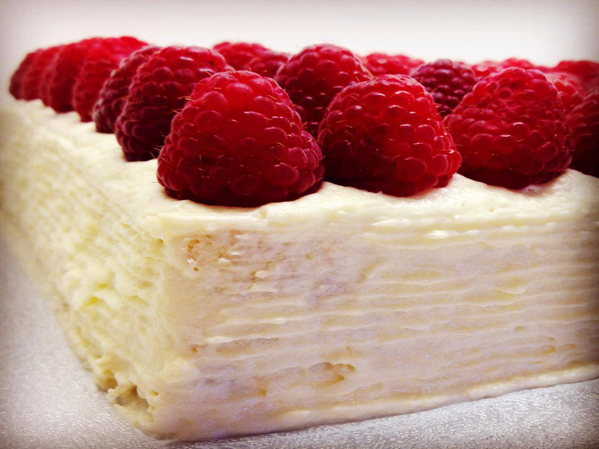

Vanilla & Raspberry Frosting
Spiderman & Batman Celebration Cake
Shorbread Christmas Birdhouse

Vanilla Topped With Raspberries

Spider Holloween Cake
Blackcurrent Elder Flower & Lime Drizzle
ABOUT
Freshly prepared, home made and using local ingredients to create truly delicious cakes and pastries for all to enjoy.
Sugarbird Gluten-Free Baking came about through the pure enjoyment of experimenting with baking at home. I developed an interest in free from baking over the years with my family's various dietary needs
It came to a point where everyone was gaining a few too many pounds with my constant supply, that i thought about setting myself up on a business venture. So i may share with everyone my scrummy treats... and to spare my family's waist line.
The drive behind my baking is the desire to create moist, beautiful flavoursome cakes and pastries, whether you have a dietary need or not. Creating timeless classics and experimenting with new flavours to excite the pallet.
Also providing for individual customer orders for celebratory cakes and cupcakes made fresh to order, this also gives you a chance to meet with myself to discuss what you want form decoration to the flavour.
Threw request I am also happy to provide gluten free bakes to be also dairy, egg and wheat free.